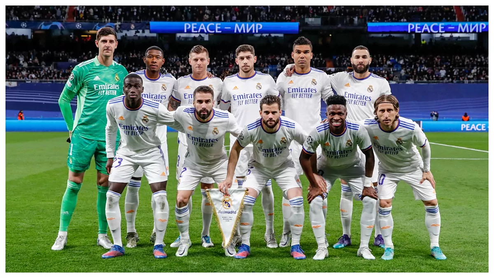

Nuevo fichaje para la temporada 2024
El Real Madrid ha anunciado el fichaje de un nuevo delantero estrella para la próxima temporada. Conoce más sobre el impacto que tendrá en el equipo.

El Real Madrid es uno de los clubes más exitosos en la historia del fútbol mundial, con una rica trayectoria desde su fundación en 1902. Conoce más sobre nuestra historia, equipo actual y los trofeos ganados a lo largo de los años.
El Real Madrid ha anunciado el fichaje de un nuevo delantero estrella para la próxima temporada. Conoce más sobre el impacto que tendrá en el equipo.
El Santiago Bernabéu está en fase de renovación y expansión para mejorar la experiencia de los aficionados. Se espera que las obras concluyan a finales de 2024.
Fundado en 1902, el Real Madrid ha crecido hasta convertirse en uno de los clubes más prestigiosos del mundo. A lo largo de su historia, ha conseguido más de 35 títulos de La Liga, 14 títulos de la UEFA Champions League, entre otros grandes logros.
"El Real Madrid no es solo un equipo de fútbol, es una leyenda que se ha construido con esfuerzo, pasión y victorias." - Santiago Bernabéu